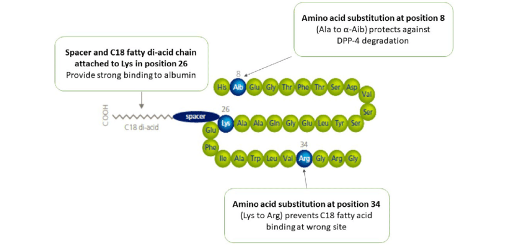

class: center, middle # Genetics, Obesity, and Treatments By Ahmet Ilten and Harry Minsky --- # Agenda 1. Introduction 2. Deep-dive 3. ... --- class: center, middle # PART 1 --- class: center, middle # PART 2 --- # Ozempic and Wegovy: What the Hell? 1. OZEMPIC -> diabetes drug 2. WEGOVY -> weight loss 3. SAME Active Ingredient --- # Semaglutide  1. The first six amino acids of GLP-1 are missing 2. Substitutions are made at GLP positions 8 and 34 3. Ends with a chain of 17 carbon atoms and a carboxyl group --- # Use as a obesity drug <span class="footnote"> hello </span> --- # Genetic Disposition - Question: If genetics can affect obesity in individuals, do genetics also influence the effectiveness of obesity treatments? Furthermore, what kinds of obesity would be best treated by Semaglutide? --- # Hypothesis Wegovy and Ozempic are only effective weight loss drugs for those who are genetically dispoed to having harder-to-satiate appetites --- # Research <br> Tests performed at the Mayo Clinic using saliva found that: 1. Those who possessed genes that were linked to uncontrolled appetite were more likely to benefit from semaglutide injections 2. The effects of semaglutide injections on those with genes related to slow metabolisms were less likely to benefit Notably, Ozempic and Wegovy outperformed the use of Saxenda in similar trials. Saxedna, whose active peptide is liraglutide(another GLP-1-like peptide) in almost all cases, suggesting that Semaglutide is a more effective appetite inhibitor for those genetically disposed to certain kinds of obesity --- # Conclusion 1. Obesity is influenced by a multitude of heritable genetic factors 2. Weight-loss drugs that surpress appetite are most effective in subsection of persons who possess the genetics that make their appetite harder to satisfy. <span class="footer"> <a href="https://time.com/6290767/weight-loss-drug-genetic-test-ozempic-wegovy/ ">Reference</a> </span>